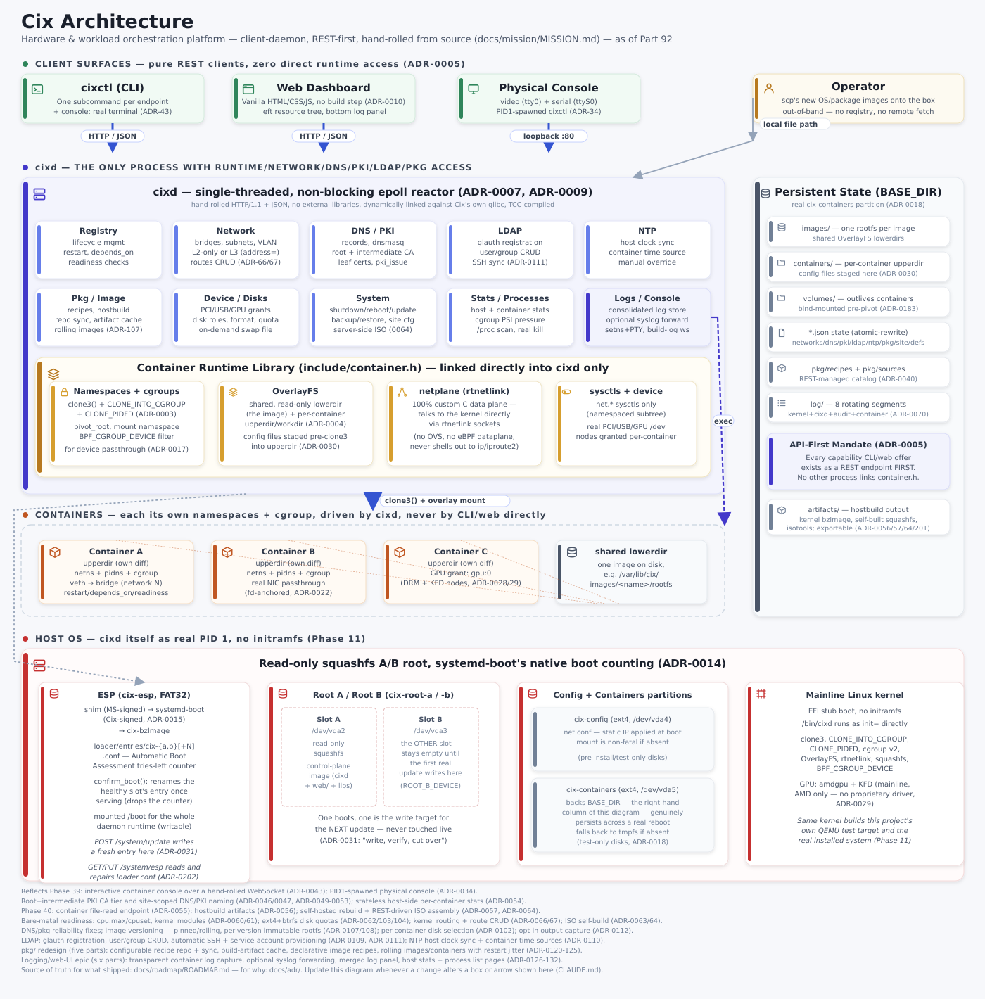

Client surfaces
Clients have no special access.
cixctl, the vanilla HTML/CSS/JS dashboard, and the physical console all use the same API. The OpenAPI document is the contract for other integrations.
System architecture
The CLI, web dashboard, and physical console converge on a REST-first native C daemon. From there, Cix reaches Linux primitives directly.
Client surfaces
cixctl, the vanilla HTML/CSS/JS dashboard, and the physical console all use the same API. The OpenAPI document is the contract for other integrations.
Control plane
cixd is the authority.A single-threaded, non-blocking epoll reactor written in C and compiled with TCC. It is the only process linked directly to the container runtime and the only process with direct runtime, network, DNS, PKI, LDAP, and package access.
Runtime mechanisms
Namespaces + cgroupsclone3(), PID namespaces, mount namespaces, cgroup v2, and pidfds.
OverlayFSOne shared read-only image lowerdir plus per-container upper and work directories.
RtnetlinkA custom C networking plane talks directly to the kernel—no OVS and no eBPF data plane.
Device grantsReal device nodes and cgroup device filters expose explicitly assigned hardware.
Workloads
Each workload receives its own namespaces, cgroup, filesystem diff, network attachments, limits, configuration, and optional hardware. Definitions, restart policy, dependencies, and readiness are controlled through the API.
Host OS
Cix boots a kernel.org Linux kernel with cixd as PID 1 and no initramfs. Operators choose a pinned, longterm, stable, or mainline tracking policy through the API; policy reports the available version and never silently moves the recipe pin. The control-plane root is read-only squashfs. Host updates target the inactive A/B slot, verify it, and let systemd-boot’s boot counting provide rollback.
Canonical diagram
The repository diagram carries the detailed services, persistent-state layout, container paths, boot chain, and ADR references omitted from this readable overview.
Open source diagram ↗
{kind=link}